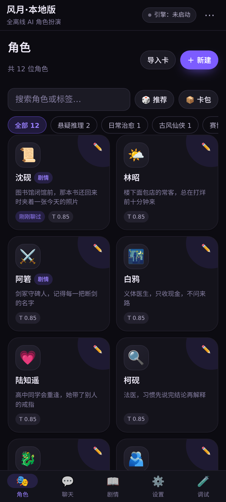
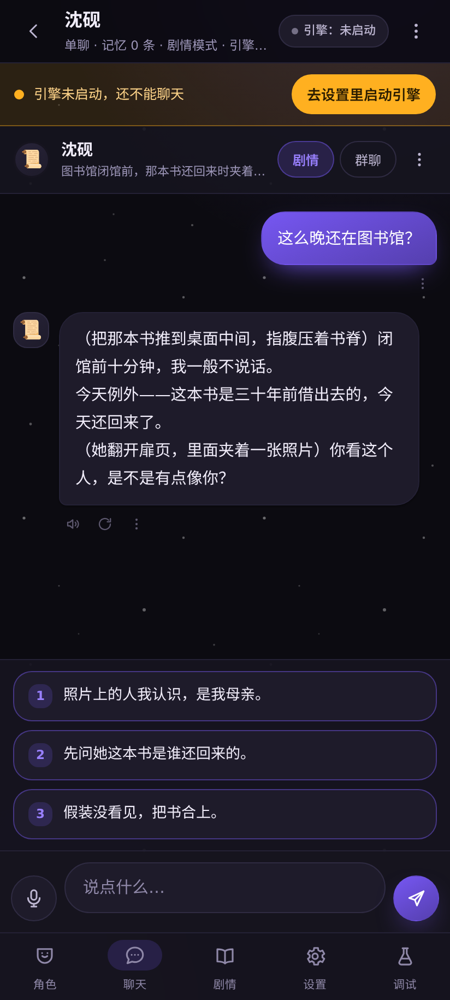
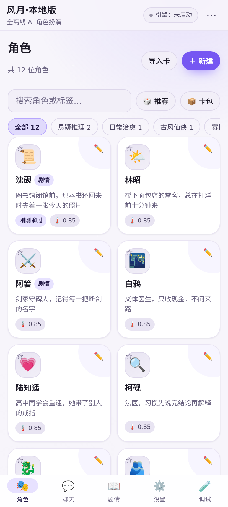
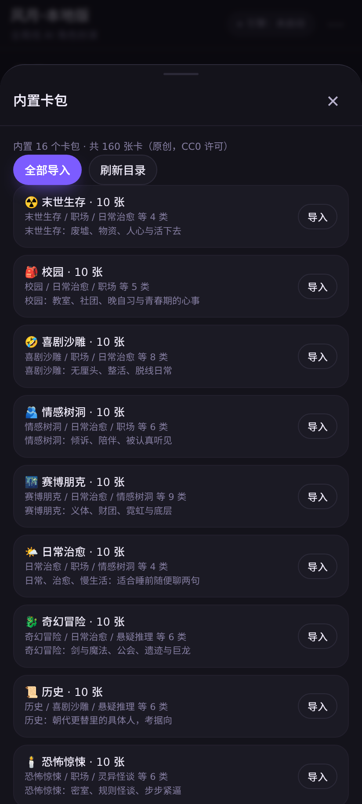
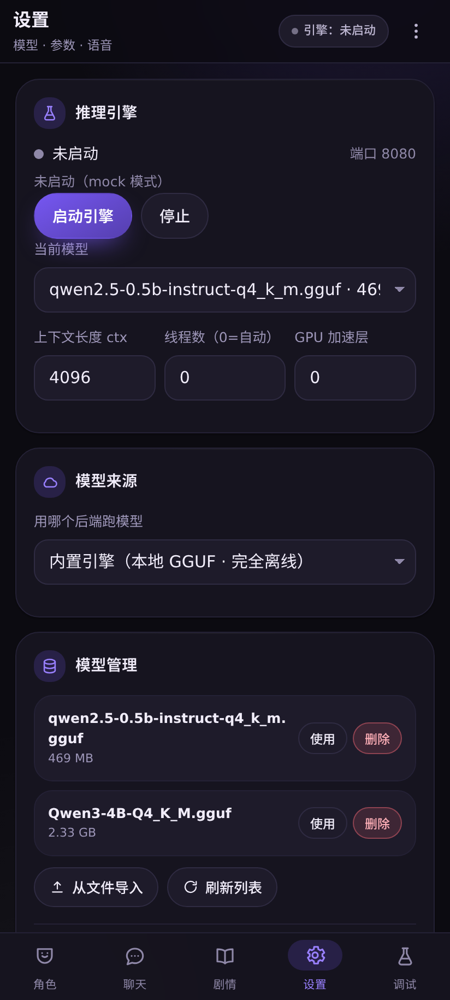
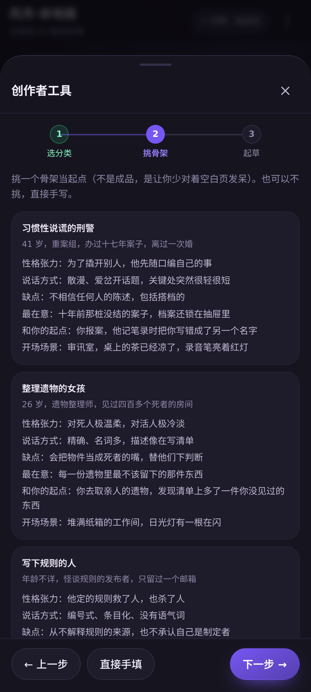

完全离线的 Android AI 角色扮演 —— 模型与推理全在手机本地跑。
不登录、不联网、不上传对话。
llama.cpp 官方 Android 库内置进 APK，模型放本地。飞行模式照样聊，对话永远不出这台手机。
0.5B 起，3B / 4B 也能加载。实测 0.5B 42–52 字/秒，打字机效果和在线服务一样顺。
16 类 ×（1000 角色 + 1000 剧情），全部 CC0，按需下载不进 APK。
16 类模板 + 48 个人设骨架 + 七维质量评分 + 用你自己的模型 AI 辅助扩写。
本地 GGUF / 局域网 Ollama·LM Studio / 云端 API（预置 DeepSeek 等），顶栏一键切。
手写设计系统，图标全是内联 SVG，深 / 浅 / 跟随系统三档，零外部素材。






| 路径 | 适合 | 怎么弄 |
|---|---|---|
| 云端 API（默认推荐 DeepSeek） | 想省事、手机内存小、要更好的质量 | 设置 → 模型来源 → 外部服务，DeepSeek 已预填，填个 API Key 就能聊 |
| 本地模型（完全离线） | 不想联网、不想花 API 钱 | 设置 → 模型，下载内置的 0.5B（约 0.5GB），或粘任意 GGUF 直链 |
| 局域网自建 | 有电脑 / VPS 想跑大模型 | 填 http://电脑IP:11434/v1（Ollama / LM Studio / llama.cpp server） |